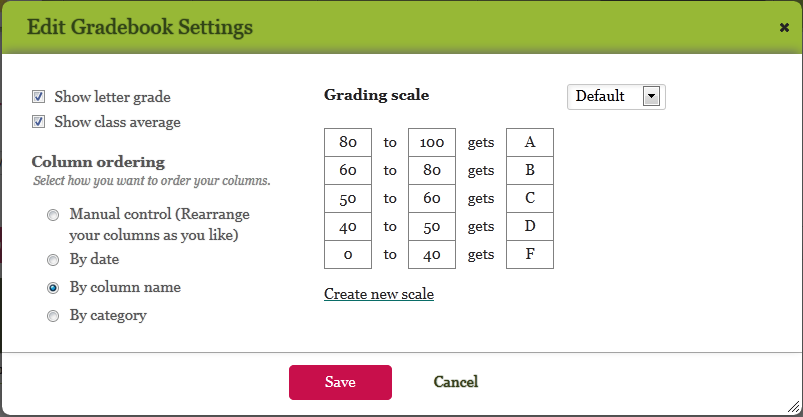
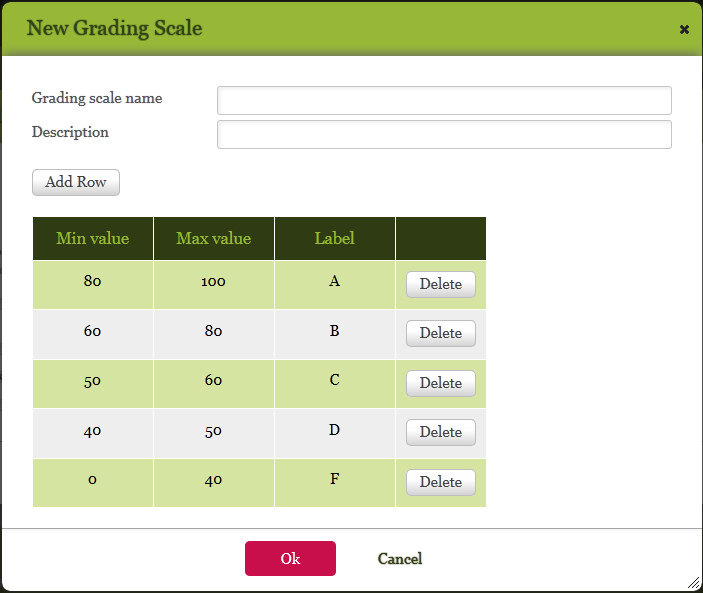
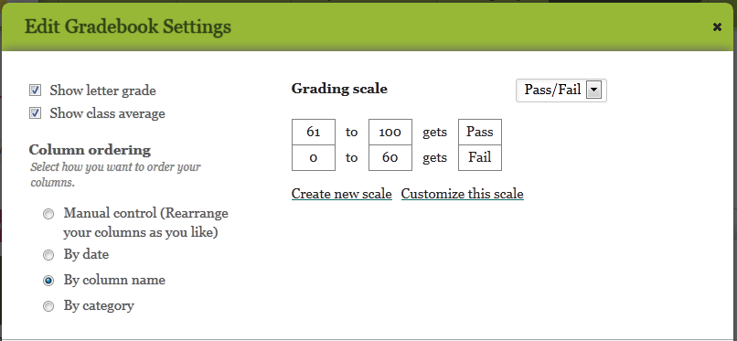
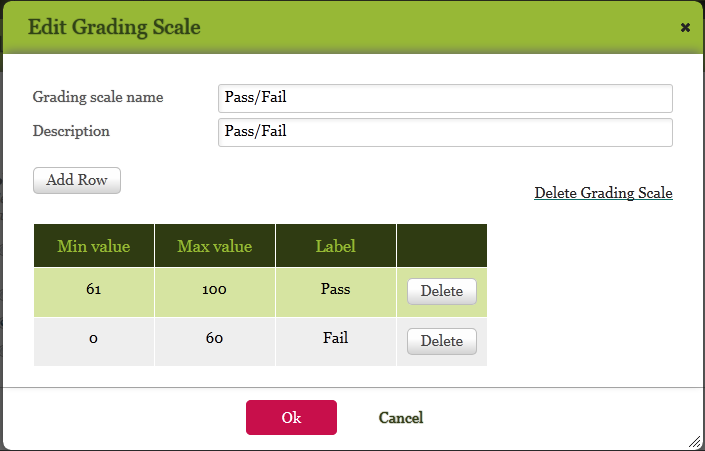
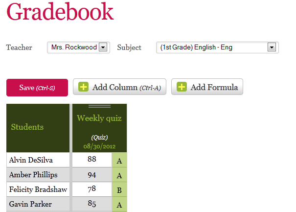
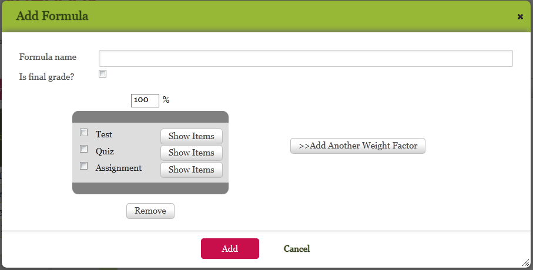

Gradebook (by jean)
You record students' grades in the Gradebook module. When you enter grade, you can make comments about the grades, and you can make those comments visible to teachers, to parents and students, or both. You can also configure gradebooks, define grade scales, and add formulas for calculating cumulative grades such as midterm and final grades. The fields and options that you see in the Gradebook module might differ from what is described here, depending on the configuration of the Gradebook module and your authorizations.
You can view videos about Quickschools gradebooks here:
This chapter explains how to perform the following tasks:
Updating Gradebook OptionsUpdating Grading Scales
Adding Grades to Gradebooks
Adding Formulas to Gradebooks
Updating Gradebook Options
The administrator configures system-wide grading scales and options, but you can change these options as needed. Any changes that you make apply only to the gradebooks that you are authorized to update.
To specify gradebook options:
1. In the Gradebook module, click the update icon . The Edit Gradebook Settings window opens.
2. From the dropdown menu, select the grading scale that you want to update.  Edit Gradebook Settings window
2. To view corresponding letter grades as you enter numeric grades in your gradebooks, select the Show letter grade check box; to hide letter grades, clear the check box.
3. To view the class average as you enter grades, select the Show class average check box; to hide the class average, clear the check box.
4. To change the sequence in which columns display in your gradebook, select the appropriate option.
5. Click Save.
Updating Grading Scales
You can add, change, and delete grading scales. Any changes you make apply only to the gradebooks that you are authorized to update.
This section describes how to perform the following tasks:
Adding Grading Scales
To add grading scales:
1. In the Gradebook module, click the update icon . The Edit Gradebook Settings window opens. Edit Gradebook Settings window
2. (Optional) From the dropdown menu, select a grading scale that is similar in structure to the scale that you want to create. You can use its structure as a base for defining the new grading scale.
3. Click Create new scale.
 New Grading Scale window4. In the New Grading Scale window, specify the name and description of the new grading scale.
5. To enter values for the new grading scale, click Add Row to add rows, Delete to delete rows, or type over existing values in the table. Specify a minimum numeric value, maximum numeric value, and label in each row.
6. After you finish updating the table, click Ok.
7. In the Edit Gradebook Settings window, edit the gradebook settings as needed, and then click Save. The grading scale is available for use in your gradebook.
Editing Grading Scales
To edit grading scales:1. In the Gradebook module, click the update icon . The Edit Gradebook Settings window opens.  Edit Gradebook Settings window
2. From the dropdown menu, select the grading scale that you want to update, and then click Customize this scale.
3. In the Edit Grading Scale window, click Add Row to add rows, click Delete to delete rows, or type over the existing values.
 Edit Grading Scale window4. Click Save.
Deleting Grading Scales
To delete grading scales:1. In the Gradebook module, click the update icon . The Edit Gradebook Settings window opens. Edit Gradebook settings window
2. From the dropdown menu, select the grading scale that you want to delete, and then click Customize this scale.
3. In the Edit Grading Scale window, click Delete Grading Scale.
Edit Grading Scale windowAdding Grades to Gradebooks
Each column in a gradebook contains the grades for a test, quiz, homework assignment, or other category that the administrator defined. As you enter grades, the system might automatically display additional fields, depending on the selected gradebook options. The additional fields are the letter grade that corresponds to each numeric grade, the highest possible score that a student can receive, and the average grade for the class.
If the gradebook is configured to display the average grade for the class, that information appears at the bottom of the column, in the following format: average grade/highest possible score. If the highest possible score for a particular assignment or test differs from the default highest possible score for the category (for example, a perfect score on one particular quiz is 50 instead of 100), you can overwrite the value of the highest possible score. The letter grades that correspond to the numeric grades in that column are recalculated based on the updated value.
A legend below the list of student shows non-numeric grade values that you can enter for special circumstances (for example, excused and unexcused absences). The legend does not appear until you add at least one column, close the gradebook, and then reopen the gradebook.
To add grades to a gradebook:
1. In the Gradebook module, select the gradebook that you want to update, and then click Add Column.
3. In the Add Gradebook Column window, specify a name for the column (for example, Weekly Quiz or Lab Assignment), the category, the date, and the highest possible grade that a student can receive, and then click Add.
4. If the legend does not appear below the list of student names, click Save, exit the grade book, and then reopen the gradebook.
5. To the right of each student's name, specify his or her grade.
6. To record comments about a grade, click the comment icon to the right of the number grade, enter comments in the Comments window, and then click Save Comments.
7. After you enter all the grades, click Save.
Adding Formulas to Gradebooks
You create formulas to generate cumulative grades such as midterm and final grades. You can assign varying weights to different categories of grades; for example, you might want homework assignments to count for 50 per cent of students' final grades and quizzes and tests to count for 25 percent each. By default, the formula generates grades based on all the items in a category, but you can optionally exclude individual items. You also specify whether or not the items in a category are included in future calculations. For example, you might want to include midterm grades when final grades are calculated later in the school year.After you create a formula, the system adds a column to the gradebook and populates the column with the grades generated by the formula. If the formula calculates final grades, the grades are automatically added to students' report cards.
To add formulas to gradebooks:1. In the Gradebook module, select the gradebook that you want to update, and then click Add Formula.
 Gradebook page3. In the Add Formula window, specify a name for the formula. This name typically describes the grade that the formula calculates; for example, Final Grade.
 Add Formula window4. If the formula calculates a final grade, select the Final Grade check box.
5. In the first table, select a category and assign a weight (percentage of total grade) to the category. To include the grade in future calculations, select the check box to the left of the category. To exclude the grade from future calculations, click Show Items to the right of the category, and then select the individual items to include in the weight factor.
6. If the total percentage is less than 100%, click Add Another Weight Factor and repeat the previous step until the weight factors total 100%.
7. Click Add.